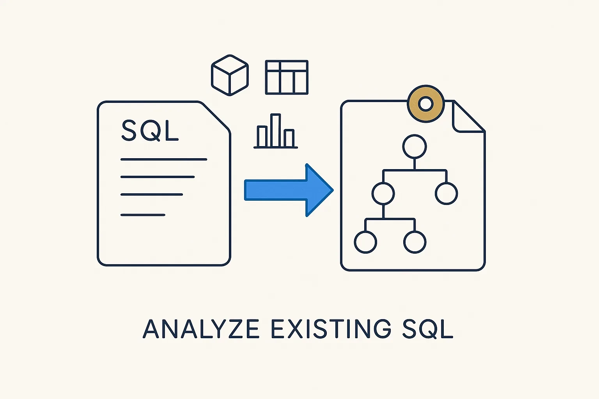

Deeply analyze existing SQL code and data transformations in any format — models, table structures, reports — and convert them into one standard metadata format, then add explanatory metadata.

> Deeply analyze existing SQL code and data transformations in any format — models, table structures, reports — and convert them into one standard metadata format, then add explanatory metadata.
The other half of capture is the code. An organization’s real logic lives in its SQL transformations, data models, table structures and reports — and, often, in transformations expressed in other formats too. This is input as much as any document is, and usually the most valuable and most tangled kind. So the pipeline analyzes it extensively: parse the SQL, reconstruct the models and mappings it implies, read the table structures and the reports that consume them, and convert all of it into one standard metadata format so it sits alongside everything else.
Conversion is only the start. Raw code tells you *what* happens, not *why* — so on top of the extracted structure you add explanatory metadata: the intent behind a transformation, the business meaning of a column, the reason a filter exists. That is what turns a mechanical dump of SQL into something a human or an AI can actually reason about. Code check-ins also reveal who wrote what, which points at the stakeholders to interview later.
This feeds straight into hunting gaps and inconsistencies and into transformation modeling — because once the buried SQL is metadata, its copy-pasted logic, tangled DQ fixes and missing layering become visible and fixable rather than hidden.
Where it lives: the method layer of Breakthrough Modeling — buried SQL and transformations, analyzed into standard metadata.